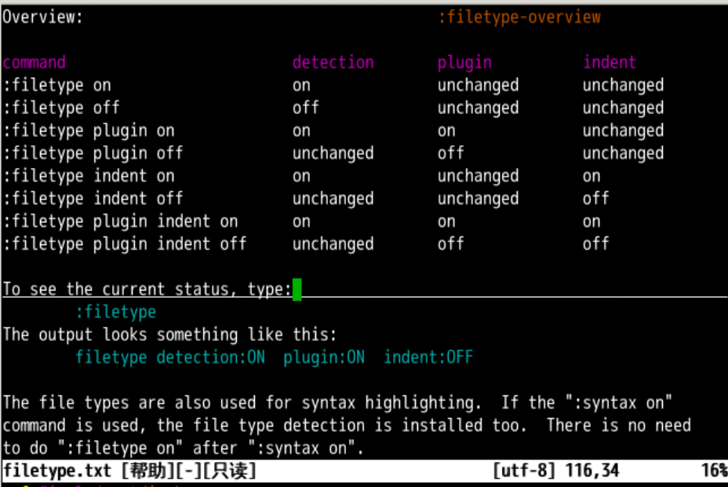
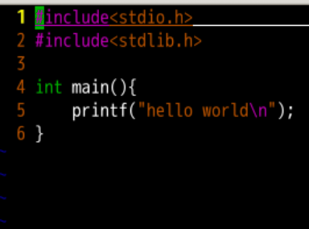
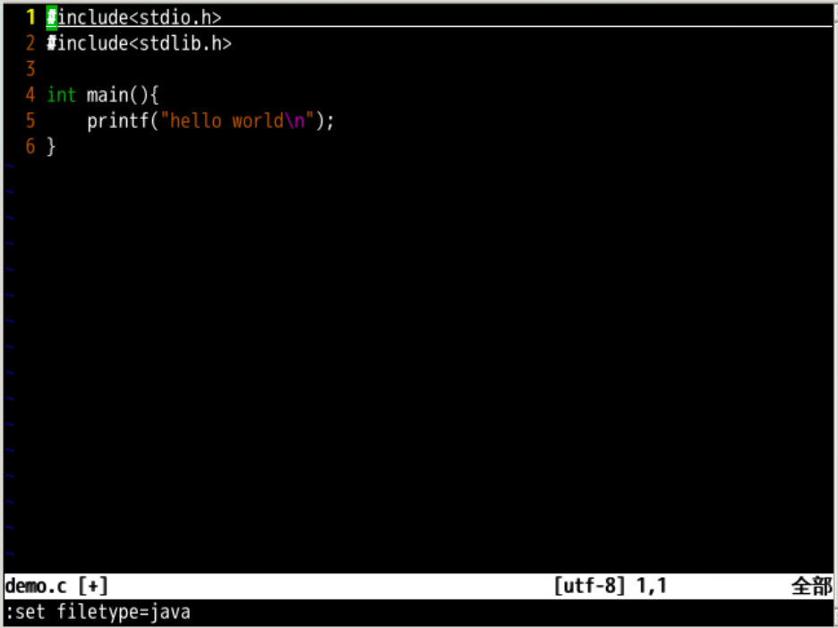
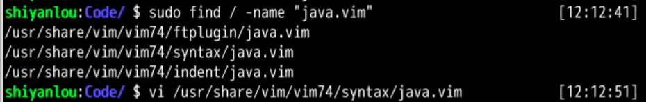
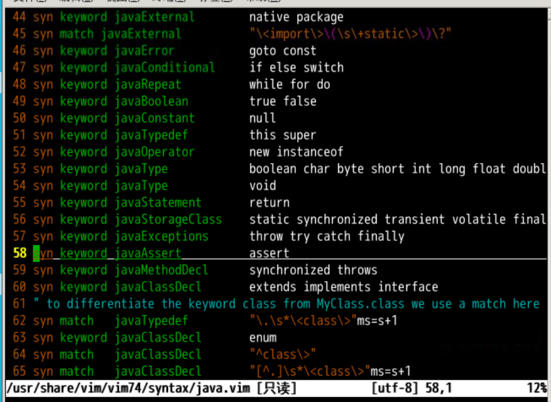
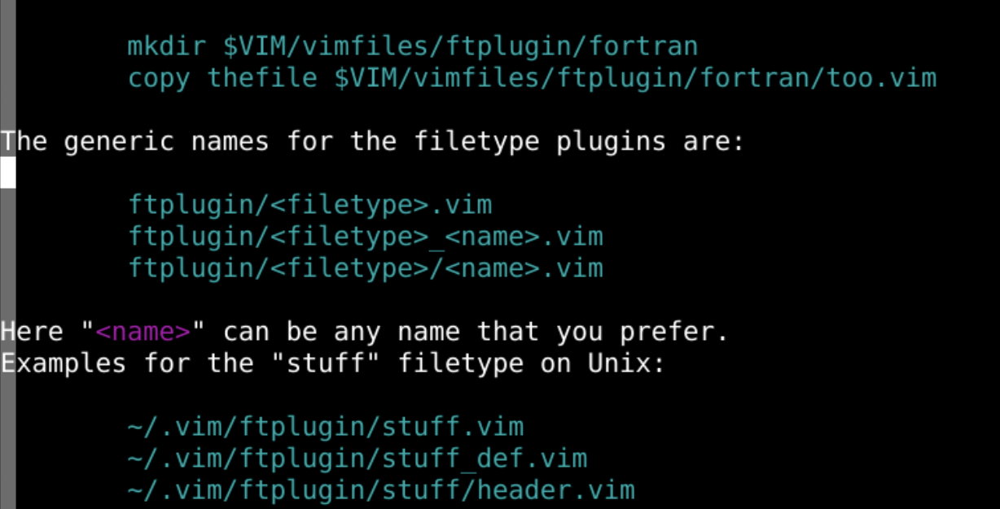
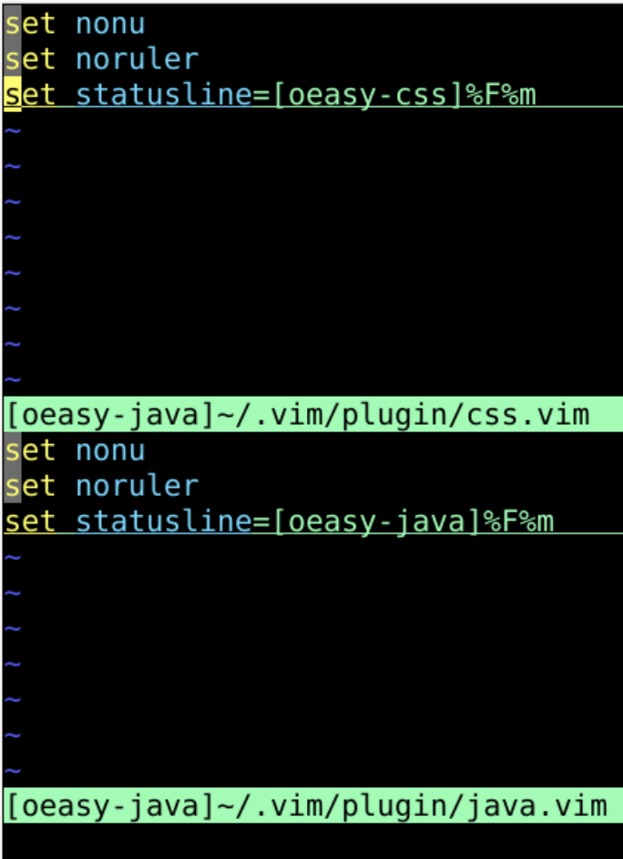
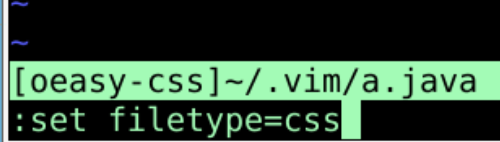
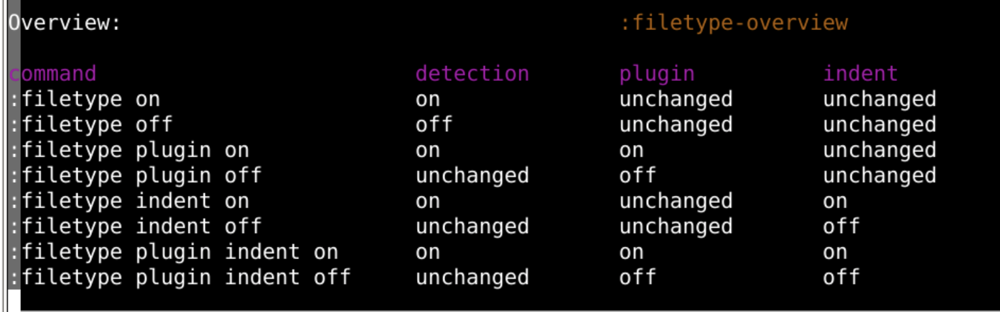

上次了解了缩进的各种方式
<< 缩进tab 缩进:set listchars=eol:$,tab:>-,space:_有关于缩进对应空格数的参数
autoindent
简写为 :set noet sw=4 ts=4 sts=4 ai

:filetype 可以设置当前文件类型检测信息:filetype on 检测文件扩展名:filetype off 取消检测文件扩展名.c:filetype on .cfiletype 是什么呢？:set filetype?filetype=c.c 文件缩进为 8 呢？demo.c
.c 文件类型的缩进的话:filetype indent on/usr/share/vim/vim81/indent/c 对应 c.vimjava 对应 java.vimhtml 对应 html.vimc 缩进为 8java 缩进为 4html 缩进为 2/usr/share/vim/vim81/indent/c.vim 就可以设置c的缩进:set et sw=8 ts=8 sts=8 aidemo.c /usr/share/vim/vim81/indent/c.vim来重新控制缩进了
demo.c 时,系统会检测他的文件类型硬 要说他是一个 java 文件会如何呢？🤪:set filetype=javainclude 之类的语法高亮消失了4java文件缩进的要求来做#找出所有的java.vim文件
sudo find / -name "java.vim"

indent 下的 java.vim 负责缩进syntax 下的 java.vim 负责语法高亮/usr/share/vim/vim81/syntax/下面
:syntax on 可以设置关键词高亮，这个是所有语法高亮的根开关java 文件类型的的插件 plugin:set filetype plugin on/usr/share/vim/vim81/ftplugin/下面indent 下的 java.vim 负责缩进syntax 下的 java.vim 负责语法高亮ftplugin 下的 java.vim java文件类型 的插件
java 语言的插件来举例/usr/share/vim/vim81/ftplugin/java.vim/usr/share/vim/vim81/ftplugin/java_xxx.vim/usr/share/vim/vim81/ftplugin/java/xxx.vim~/.vim/ftplugin/java.vim~/.vim/ftplugin/java_def.vim~/.vim/ftplugin/java/header.vim :!mkdir -p ~/.vim/ftpluginftplugin 而不是 pluginplugin 里面的插件全部都被加载ftplugin 里面的插件根据文件类型加载

css 文件是 java 文件会如何呢？filetype 的 syntax 文件不同css 的语法去标注 java 的高亮组/usr/share/vim/vim81/indent//usr/share/vim/vim81/syntax//usr/share/vim/vim81/ftplugin/java.vim/usr/share/vim/vim81/ftplugin/java_xxx.vim/usr/share/vim/vim81/ftplugin/java/xxx.vim~/.vim/ftplugin/java.vim~/.vim/ftplugin/java_def.vim~/.vim/ftplugin/java/header.vim ~/.vim/ftplugin中 的 html.vim 的设置html :filetype indent on 文件类型缩进生效:filetype syntax on 文件类型语法高亮生效:filetype plugin on 文件类型插件生效